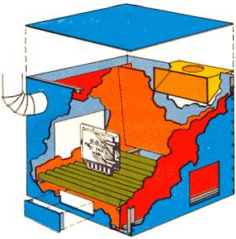
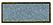
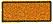
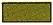
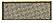
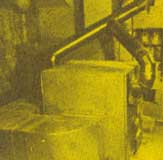
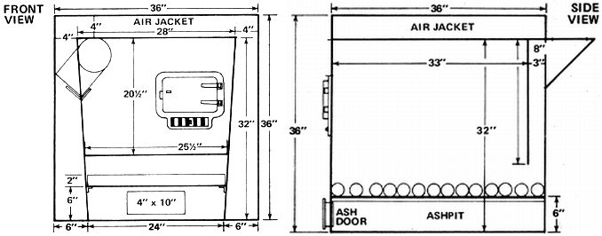

COLOR CODE
During the summer of 1973 I quit a plumbing job in Minneapolis and my wife, Merle, stopped work as a secretary. Then, together with our four children, we made the big break: to a 310-acre farm (which cost nearly every penny we had) in southeastern Minnesota's Zumbro Valley.
None of us would trade our new country living for anything . . . although we have had ups and downs out here on the farm. Our tight budget, for instance, was almost busted right up its seams when we received our first liquefied petroleum gas bill. Why, it was costing us $200 a month just to heat our seven-room house! At that rate, the expense for gas alone could quickly make the difference between independence on the land or going back to work for a boss somewhere. We had to cut those fuel bills and cut them fast.
Now I didn't have time to mess around with exotic (solar and the like) heating ideas back in the early winter of '73. We needed cheap heat and we needed it then. So with the help of my brother-in-lawHarvey Melcher, a welder in Hammond, Minnesota-I combined two assets we already had on hand (150 acres of woods and that greedy LP-gas forced-air furnace). The result is a wood-burning space heater which:
[1] Keeps my family warm while saving $1,200 a year.
[2] Sits in the basement, thereby adding no dirt or mess to the house.
[3] Has a big, off-center door which takes pieces of wood up to 30" long and 10" in diameter. This eliminates almost all need to split the chunks of fuel and makes stoking the fire a twice-a-day job.
[4] Burns-right in the firebox-most of the smoke it creates, for maximum usable heat and minimum Btu loss up the chimney. .
[5] Has cast-iron grates.
[6] Features very easy ash removal.
[7] Needs no damper adjustments during operation.
[8] Is tied directly into the old LP furnace so that it uses all the original heater's controls and ducts. This cut the cost of conversion and allows us to leave home for any length of time, always confident that the gas burner will automatically kick in whenever the wood fire gets low and the house cools to 60° F.
Essentially, our new heater is nothing but a jacketed woodburner set into the cold-air-return ducting for the old LP furnace's forced-air system. The added unit preheats the air going into the gas burner and, if that preheated air is hot enough, the LP furnace doesn't kick on at all. Whenever the wood fire dies down, however (or on the extremely cold days when that blaze simply isn't enough to warm the house), the gas furnace automatically ignites.
Our simple add-on unit can be constructed at minimum cost by anyone who can weld. With the addition of only a little ductwork, the wood-burning furnace could be used as the sole source of warmth for a house that doesn't already have central heat. For installation in a remote cabin that has no electricity (thereby making it impossible to use a powered blower), the warmth the heater produces can be circulated by the old gravity-flow forced-air system. Variations on our basic design are endless.
After Harvey and I had figured out what we were going to build, we began to scrounge and buy the materials we needed for the project. They included:
1 barrel stove door (used and free)
6 sheets of 20-gauge steel (mill-ends which cost 7 cents a pound)
6 sheets of 16-gauge steel (same as above)
35 running feet of 2" cast-iron pipe (scrounged)
6 2-foot sections of 6" stovepipe, one "T", and 4 elbows (bought new for $15.00)
Ductwork (made to fit installation by local tin shop for $58.00)
Nuts, bolts, welding rod, assorted hardware ($10.00)
The steel sheets listed above cost us a total of $20.00 and our labor was free. I repaid Harvey for his time by helping out with a job that he needed done.
The firebox in our furnace is 32 inches tall (including grate and ashpit) and 36 inches long. The combustion chamber is 28 inches wide at the top and tapers (so that the wood within will fall together as it burns) to a width of 24 inches at the bottom. This means, of course, that the top of the firebox measures 36" X 28" and the bottom, 36" X 24". We used 16-gauge steel for all surfaces that come into direct contact with the blaze.
The firebox's front face is a 36" X 36" square of 16-gauge steel. Its upper corners each extend out (4 inches) and up (4 inches) from the "real" upper corners of the furnace's combustion chamber. The lower corners of the firebox's face also extend horizontally 6 inches past the lower corners of the combustion chamber. No, this wasn't a mistake. By leaving the strip of "extra" plate across the top and down both sides of the firebox's "real" front, we were also forming the front face of the air jacket that we knew we wanted to fit around our furnace.
The rear face of the firebox was handled entirely differently than the front. It's -a piece of 16-gauge steel that measures 28 inches across the top, 25-1/2 inches along the bottom, and 20-1/2 inches down each side. This somewhat irregularly shaped slab of flat stock is set three inches forward of the rear edges of the combustion chamber's vertical sides, positioned so that its lower edge is 11-1/2 inches above the floor of the ashpit, and welded in place. (When the furnace is in use, the gap left along the bottom of this back plate allows smoke to exit from the firebox.)
Once we had the front and back of the firebox welded to its walls, we fastened our grate supports in place. These supports are two 36" lengths of scrap angle iron welded to the inside surfaces of the combustion chamber walls. The angles are 36" long, extend the entire length of the firebox, and are positioned to hold the grate horizontally and six inches above the floor of the ashpit.
The grate itself is nothing but a dozen or so cut-to-fit lengths of 2"-diameter cast-iron pipe laid crossways on the angle irons. The sections of pipe are movable so that we can jiggle them with a poker when we want to make ashes fall through to the ashpit below.
As soon as the grate supports were in place, we welded a 24" X 36" 16-gauge steel plate to the bottom of the box formed by the vertical front, back, and walls of the firebox. This sheet of flat stock, of course, made the floor of the combustion chamber's ashpit. With the 28" X 36" piece of 16-gauge steel welded in place on top of the firebox, the heart of our furnace was complete. We were ready to surround the finished combustion chamber with an air jacket constructed of 20-gauge metal.
Our first step in adding that jacket was to carefully align a 36"-square sheet of 20-gauge plate against the rear edges of the firebox's walls. When that sheet of metal exactly matched the 16-gauge plate on the front of the combustion chamber (with its upper corners extending 4 inches out past and 4 inches above the upper corners of the firebox and its lower corners flush with the floor of the ashpit but sticking out horizontally 6 inches on each side of the pit's lower corners), we welded it in place.
Then we built a frame for the rest of the air jacket by welding angle iron around all four edges of the 36"-square 16-gauge sheet of steel on the front of the furnace and around all four edges of the 36"square sheet of 24-gauge plate on the back of the wood-burner. We also welded angle along the bottom of the sides of the firebox.
The sides of the air jacket itself were next formed by making a 6"long, right-angle bend parallel to the short edge of a 36" X 42" piece of 20-gauge sheet steel. This gave us a 36" X 36" finished "side" with a 6" wide "lip" along its "bottom".
These sides plus a 36" X 36" top were then attached to the firebox by drilling and tapping right through the sheet metal into the angle iron framework underneath. Asbestos paper gaskets between all facing metal surfaces make the jacket airtight.
We cut the opening for our wood-burner's loading door as far to the right on the furnace's front face as we could. This allows us to chuck in really big chunks of fuel, roll them to the left . . . and still have plenty of room to heave in even more oversized pieces of wood. The cast-iron door-which we scavenged from an old barrel stove-that covers the opening has a built-in adjustable air control along its bottom. This (plus the fact that the furnace's firebox is all-welded and airtight) eliminates the need for any dampers in the main chimney pipe.
What we have instead is a small, secondary flue built into the upper left corner (higher than the loading door on the right) of the wood-burner's front panel. This little stovepipe is equipped with an adjustable damper which can be completely closed (and usually is). The only time we open this damper is when we want to start a fire or add fuel to an existing blaze. Cracking the damper in the small vent at such times clears smoke from the top of the firebox so that none of the fumes pour out into the basement when the loading door is opened.
This is necessary because, unlike most furnaces, our woodburner doesn't have its main flue located on the top or side of the firebox (where it draws so well that it frequently pulls great quantities of heat right up the chimney).
Instead, our wood-burner's main smoke escape is a firebox-wide slot approximately 3 inches high that runs across the lower edge of the back of the combustion chamber. This gap opens into the sealed firebox-wide-and-3-inch-deep cavity between the rear face of the combustion chamber and the 36" X 36" sheet of 20-gauge steel used for the outside back panel of the furnace.
An outlet for a 6" stovepipe is cut into the top end of the furnace's back panel, and it's this pipe which acts as the wood-burner's main flue. To get to this stovepipe, however, smoke from the blaze in the firebox must first be drawn down through the slot at the bottom of the combustion chamber's back and must then pass up through the cavity between the rear of the firebox and the furnace's back panel.
This keeps the fumes in the combustion chamber longer and forces them to burn more efficiently. It also-as the smoke which does get out is pulled up through the furnace-wide cavity on the back of the heater-allows a certain amount of warmth from even the escaping fumes to radiate into the basement and into the stove's air jacket. In short, more heat is extracted from the wood that is burned and more of that extracted heat is used in the house instead of going out the chimney.
The two flues-the little one on the front of the furnace and the main one on the back-are connected into a single stovepipe which, in turn, runs to the chimney. And the pipes are pitched up as steeply as possible from the heater to that chimney to keep soot from building up in them.
We cut only one other opening (in addition to the loading door and the two smoke vents) into our wood-burner's firebox. This is the 4" X 10" ash removal door located on the front of the furnace and one inch up from its bottom edge. The removable cover is simply a piece of sheet steel a little larger than the hole it covers. Two pieces of angle welded to the back of the plate rub against the sides of the opening and act as a friction lock to hold the door in place.
And that's our wood-burner! The unit sits in the basement next to the old gas furnace and rests on lengths of three-inch channel iron to keep it up off the damp floor (so the bottom of its air jacket and ashpit won't rust out).
We checked with our local tinbender-he's experienced in the design and installation of heating systems and knows how to match a properly sized air duct to the rated capacity of a blower-before we began hooking our wood-burner to the old gas furnace.
Next, armed with tips and calculations from our consultant, Harvey and I cut a 12" X 13" hole in the cold air return of the gas heater and a matching hole in the air jacket of our new furnace. The two openings, as you've probably guessed, were then connected by a length of duct and the cold air return fan on the old LP furnace was turned around so that it would blow into the wood-burner's jacket instead of into the gas heater.
An 18" X 18" hole was then cut into the other side of our new furnace's air jacket and a duct was run from that "outlet" into the heating chamber on the LP burner.
By making these connections, of course, we hoped that the fan of the old furnace-set on "continuous" instead of "automatic"-would force returning cold air (from the living areas of our house) into the jacket of the new wood-burner. Once it had been warmed there, according to our theory, the heated air would circulate through the old LP furnace and be distributed by that heater's warm air ducts back to our home's living space. On most days, the woodburner alone would add enough Btu's to the air to heat the upstairs. And, on the days when it couldn't handle the job, the old gas furnace would automatically kick in just enough to make up the difference.
Does it work? You betcha! Our gas furnace hasn't been on more than twice in the year and a half since we built and installed the wood-burner. Our formerly unbeatable house is now comfortable right through the winter . . . even if I do have to put two cords of good, dry wood through the new furnace during really frigid weather.
Yeah, that's a lot of wood . . . but the $200 worth of gas we used to buy every month was a lot of gas too. And how much would I have to earn (at a job I didn't like) to clear that $200 . . . after taxes and the expense of driving back and forth to work? Besides, the firewood we currently burn is more or less "free", since it comes from the tops of trees I cut into lumber in my own sawmill.
All in all, then, we figure that the $100 wood-burning furnace which now saves us $1,200 a year is a pretty good deal.
Keep warm.
|
 |
|
 |
|
|
|
|
|
 |
 |
 |
|
 |
 |
|